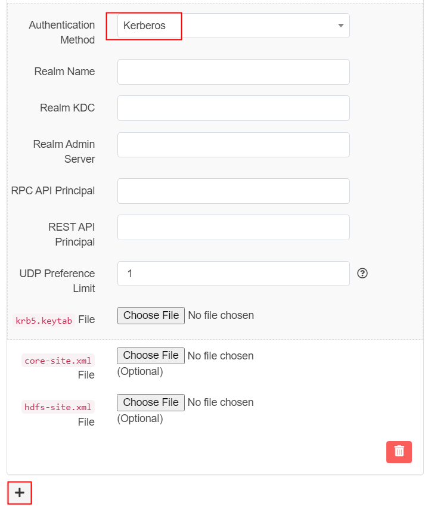

User Guide for Hadoop#
Introduction#
Aurreum Data Protection Suite (ADPS) provides the capability for the backup and restore of Hadoop. This guide introduces how to properly use ADPS to back up and restore Hadoop.
Features#
Feature |
Description |
|---|---|
Authentication method |
Simple, Kerberos |
Backup type |
Full backup: Back up HDFS directories or files. |
Backup source |
HDFS directories or files (single, multiple) |
Filter |
Exclusion: Do not back up selected files or directories. |
Backup target |
Standard storage pool, de-duplication storage pool, local storage pool, tape library pool, object storage service pool, LAN-Free pool |
Backup compression |
None, fast, tunable |
Backup schedule |
Immediate, one-time, minutely, hourly, daily, weekly, monthly |
Restore type |
Timepoint restore: Restore one or more files to a specific point-in-time state. |
Restore granularity |
HDFS directories or files (single, multiple) |
Restore location |
Original path, custom path, different host |
Reconnection time |
The job continues after the abnormal reset occurs in the network within the set time. The default value is 10 minutes. |
Storage pool replication |
Hadoop backup sets support storage pool replication. |
Restore from target pools |
Restoring backup sets from the target storage pool is supported. |
Pre/Post action |
The pre action is executed after the job starts and before the resource is backed up or restored. The post action is executed after the resource is backed up or restored. |
Speed limit |
The data transfer speed or disk read and write speed in different periods can be limited. |
D2C |
Data can be backed up directly to object storage services. |
D2T |
Data can be backed up directly to tape libraries. |
LAN-Free |
Backing up data to and restoring data from LAN-Free storage pools are supported. |
Modify a job’s backup target |
Modifying a job’s backup target is supported. |
Note:
Applicable to Hadoop (HDFS) and CDH (HDFS)
Install and Configure Agent#
Verify Compatibility#
ADPS supports the backup and restore of Hadoop. Before deploying the agent, check whether the operating system (OS) is supported. See the following for supported OS versions:
Hadoop Compatibility List#
Distributed Application |
Version |
Application Bits |
OS |
CPU Architecture |
OS Bits |
|---|---|---|---|---|---|
Hadoop |
2.2.0 |
64 |
Red Hat 6.5 |
x86 |
64 |
Hadoop |
2.6.0 |
64 |
Ubuntu 14.04 |
x86 |
64 |
Hadoop |
2.6.5 |
64 |
Ubuntu 16.04 |
x86 |
64 |
Hadoop |
2.7.3 |
64 |
Red Hat 6.5 |
x86 |
64 |
Hadoop |
2.7.6 |
64 |
CentOS 6.5 |
x86 |
64 |
Hadoop |
2.7.6 |
64 |
Ubuntu 16.04 |
x86 |
64 |
Hadoop |
2.8.3 |
64 |
Ubuntu 16.04 |
x86 |
64 |
Hadoop |
2.9.0 |
64 |
Ubuntu 16.04 |
x86 |
64 |
Hadoop |
3.0.0 |
64 |
Red Hat 7.5 |
x86 |
64 |
Hadoop |
3.0.2 |
64 |
Ubuntu 16.04 |
x86 |
64 |
Hadoop |
3.1.0 |
64 |
Ubuntu 16.04 |
x86 |
64 |
Hadoop |
3.2.1 |
64 |
CentOS 8.3 |
x86 |
64 |
Hadoop |
3.2.2 |
64 |
CentOS 7.8 |
x86 |
64 |
CDH |
6.0 |
64 |
CentOS 7.0 |
x86 |
64 |
CDH |
6.1 |
64 |
CentOS 7.0 |
x86 |
64 |
CDH |
6.2 |
64 |
CentOS 7.0 |
x86 |
64 |
CDH |
6.3 |
64 |
CentOS 7.0 |
x86 |
64 |
Download Agent Package#
Open a browser and log in to ADPS as the admin. Click Resource -> Install Agent icon. You can download the installation packages according to your needs.
Install and Configure Agent on Linux#
Install the Hadoop runtime environment before installing the agent.
Unzip the offline package for Hadoop runtime environment:
$ sudo tar -axf hadoop-2.10.0.tar.xz
After unzipping, you will see a hadoop-2.10.0 directory.
Install OpenJDK:
$ sudo apt-get install openjdk-8-jre-headless
Note:
Select the version and set the directory according to your needs. The default directory is in the /usr/lib/jvm/ directory.
Select Linux as the system and Hadoop as the module. Copy an installation command.
Paste the command on the command line, and press Enter to execute the installation.
Follow the instructions to complete the configuration.
input jre home
Enter the absolute path of OpenJDK. For example: /usr/lib/jvm/java-8-openjdk-amd64/jre
input hadoop home
Enter the absolute path of hadoop-2.10.0 For example:/home/user/hadoop-2.10.0
If you need to reconfigure the hadoop runtime environment, enter the following command:
sudo dpkg-reconfigure adps-agent-hadoop
Check Successful Installation#
After the successful installation, log in to the ADPS console as the admin and go to the Resource page. The host with the agent installed will be available on the Resource list.
Add, Activate, and Modify Hadoop Cluster#
Add Hadoop Cluster#
Click the “+” icon and select Hadoop Cluster on the Resource->Resource page to add the Hadoop Cluster.
Two authentication methods are available for adding Hadoop Cluster: Simple and Kerberos.
If the Hadoop cluster you are adding is configured with Kerberos, select Kerberos. If the Hadoop cluster to be added is not configured with Kerberos authentication, you can use the default Simple authentication method.
Click the “+” icon in the lower left corner on the Add Hadoop Cluster page to add multiple NameNodes (HA).
Options for adding Hadoop Cluster
Name: Enter the name for the Hadoop Cluster.
Host: Enter the IP or the name of the NameNode host. If the Principal is created using a hostname when Kerberos is configured, the hostname must be specified in this field. The IP address of the host and the corresponding hostname resolution must be added to the hosts file of the machine where the agent is installed.
SSL: To use SSL, it is required to enable HTTPS for the Hadoop cluster. The option is checked by default.
RPC API Port: The default value is 8020. The value needs to be modified according to the actual port if the cluster is configured with other port.
REST API Port: The default value is 50470 for HTTPS. When the SSL is not checked, the value is 50070 for HTTP. The value needs to be modified according to the actual port if the cluster is configured with other port.
User: HDFS user. For the Hadoop cluster that uses Kerberos, fill in the authenticated user in the keytab file.
Options for the Simple Authentication Method
Authentication Method: Simple is selected by default.
core-site.xml file: Upload the core-site.xml file of the cluster. The Simple authentication method does not require file uploading.
hdfs-site.xml file: Upload the hdfs-site.xml file of the cluster. The Simple authentication method does not require file uploading.
Options for the Kerberos Authentication Method

Authentication Method: Select Kerberos as the authentication method.
Realm Name: Fill in the Realm name used to configure Kerberos.
Realm KDC: The IP or the hostname of the Realm KDC server. The default port is 88. If the port number is the default value, you can leave it out. If the port number is not the default value, you must enter the value.
Realm Admin Server: The IP or the hostname of Realm Admin Server. The default port is 88. If the port number is the default value, you can leave it out. If the port number is not the default value, you must enter the value.
RPC API Principal: Fill in the RPC API Principal name.
REST API Principal: Fill in the REST API Principal name.
UDP Preference Limit: This parameter specifies the maximum value of UDP packets. Packets larger than the maximum value are transmitted using TCP. The default value is 1, and TCP is used by default. It should be adjusted according to the parameters in /etc/krb5.conf of KDC service.
krb5.keytab file: Upload the krb5.keytab file.
core-site.xml file: Upload the core-site.xml file of the cluster. To use Kerberos authentication, you must upload the file.
hdfs-site.xml file: Upload the hdfs-site.xml file of the cluster. To use Kerberos authentication, you must upload the file.
Activate Hadoop#
Activate the Hadoop cluster after it has been successfully added. Click Activate.
In the pop-up Activate window, select the resource you want to activate. Click Activate XX Edition.
After the successful activation, authorize users to have permissions of the resource in the pop-up Authorize window.
Modify Hadoop Cluster#
If the parameters of an added cluster, such as the Host, RPC API port, and Authentication Method, are changed, modify the cluster settings by clicking the Set up icon on the Resourbefore the Hadoop cluster continues to be used properly.
Before You Begin#
Check Resource#
Log in to ADPS as the operator and go to Resource. You can see the activated and authorized resource on the list and its state is “Online”. If the resource is not available, see Activate License and Assign Authorization and Add, Activate, and Modify Hadoop Cluster for details.
Check Storage Pool#
Log in to ADPS as the operator, go to Storage Pool, and verify there is any storage pool available. If a storage pool is not present, please contact the admin to create one and assign permissions to the operator.
Create Backup Jobs#
This chapter introduces how to back up Hadoop. All Hadoop that have been added, registered, and authorized successfully are available for the backup operation.
Prerequisites#
You have installed the agent. For installation, please see Install and Configure Agent.
The license has been activated and the resource has been authorized to users. For details, see Activate License and Assign Authorization and Add, Activate, and Modify Hadoop Cluster.
Log in to ADPS console as the operator.
Create Full Backup Jobs#
(1) Click Backup. Select the Hadoop host and instance.
(2) Select Full as the backup type. Select folders or files that you want to back up.
(3) Select Agent. Choose Hadoop_Proxy.
(4) Select Backup Target. You can choose the standard storage pool, de-duplication storage pool, tape library pool, object storage service pool and LAN-Free pool.
Note:
It is not supported to store full backups and incremental backups in different storage pools.
(5) Go to Backup Schedule to set the execution time of the backup job. For details, see Backup Schedule Operation. It is generally recommended to run a full backup on a weekly basis.
(6) Set Backup Options, including common options and advanced options.
Common options:
Compression: Fast is enabled by default.
None: No compression during the backup.
Tunable: You can customize the compression level. This option requires activation of Advanced Compression feature.
Fast: Use the fast compression algorithms during the backup.
Channels: Used to improve backup efficiency. The default value of Channels is 1, and the range is 1 to 255. For details, see Channel Number Configuration.
Advanced options:
Reconnection time: The job continues after the abnormal reset occurs in the network within the set time. The value can be 1 to 60. The unit is minute(s).
Speed limit: Set the limit for data transfer speed or disk read and write speed. The unit can be MiB/s or KiB/s. Click the ‘’+‘’ icon to add limits at different times.
Precondition: The precondition is checked before the job starts. The job execution is aborted when the precondition is invalid.
Pre/Post action: The pre action is executed after the job starts and before the resource is backed up or restored. The post action is executed after the resource is backed up or restored.
(6) Set Job Name and confirm the job information. Click Submit.
Create Incremental Backup Jobs#
An incremental backup only backs up data that has changed since the last backup. It is recommended to create incremental backup jobs at short intervals (such as daily) to ensure that you have at least one recoverable RTO every week.
Creating an incremental backup job is the same as creating a full backup job. Select Incremental as the backup type. Choose the full backup job as the base.
Create Synthetic Backup Jobs#
Synthetic backup is the practice that ADPS synthesizes the existing full backup set as the base with subsequent incremental backup sets to generate a new synthetic backup set.
Due to the use of the synthetic backup method, the storage device does not need to keep multiple copies of full backup data, correspondingly reducing pressure on storage space management and the storage cost caused by data growth.
To restore the incremental backup set, ordinary backups need to refer to several different points in time, and then restore the data to be restored, which will inevitably lead to performance and time consumption. In contrast, synthetic backup only needs to refer to one backup point in time, improving the restore efficiency accordingly.
Creating a synthetic backup job is similar to creating a full backup job.
(1) Select Synthetic Backup as the backup type and choose file folders or files.
(2) Select Backup Target. You can only select the file synthetic pool as the backup target. If the file synthetic pool is not listed, please contact the admin to create one.
Create Restore Jobs#
This chapter introduces how to restore Hadoop. According to the actual needs of users, ADPS provides a variety of restore types including timepoint restore, instant recovery, and recovery testing.
Create Timepoint Restore Jobs#
When folders or files on HDFS are lost, timepoint restore can be used to restore files to the specified point-in-time state. It supports the restore to the source or different host, and the restore to the original or custom path.
(1) Select the Hadoop host and instance. Click Next.
(2) Select Timepoint Restore and the Hadoop backup point in time required to restore. All incremental backup points in time are displayed under the full backup job as the base. Click Next.

Note:
For the backups stored in the local storage, all backup points in time will be listed in the Restore Source box, but the backup source will not be displayed in the File box. You can select the backup point in time to restore the corresponding backup set.
(3) Set Restore Target. It supports restoring to the source host, different host, Hadoop resource, and object storage resource. Click Next.
Note:
Some HDFS attributes cannot be restored to the OBS and POSIX file systems.
(4) Select Agent. Select Hadoop_Proxy.
(5) Set Restore Schedule. It only supports immediate and one-time restore schedules.
(6) Set Restore Options including common and advanced options.
Common options:
Channels: This option can improve backup efficiency. The default value is 1, and the range is 1 to 255. For details, please see Channel Number Configuration.
Incremental restore: Only incremental data at the selected point in time is restored. This option appears only if you select an incremental backup point in time.
Restore location: You can set the the original path or custom path as the restore location. Enter the custom path manually or click Browse to select the target folder in the pop-up box.
Advanced options:
Reconnection time: The job continues after the abnormal reset occurs in the network within the set time. The value can be 1 to 60. The unit is minute(s).
Speed limit: Set the limit for data transfer speed or disk read and write speed. The unit can be MiB/s or KiB/s. Click the ‘’+‘’ icon to add limits at different times.
Precondition: The precondition is checked before the job starts. The job execution is aborted when the precondition is invalid.
Pre/Post action: The pre action is executed after the job starts and before the resource is backed up or restored. The post action is executed after the resource is backed up or restored.
Illegal path processing: Choose how to deal with illegal paths. Four solutions are available: do not check and convert path legitimacy, skip paths with illegal characters, erase illegal characters, and escape illegal characters.
(7) Set Job Name. Confirm the job information and submit the job.
Create Instant Recovery Jobs#
Hadoop Instant Recovery allows you to instantly recover Hadoop backup set in the storage server by mounting. It recovers data quickly, uses less resources, saves disk space, and increases the availability of backup sets.
Note:
Hadoop Instant Recovery requires the adps-nfsd package to be installed on the server where Storaged is located.
Hadoop Instant Recovery currently only supports recovering backup sets from standard storage pools without multi-storage and data storage encryption enabled, and from file synthetic pools on Ubuntu.
The interface provides the following two portals to create instant recovery jobs for cloning copies: Restore and CDM.
Create from Restore Page#
(1) Enter the Restore page. Select the Hadoop host and instance. Click Next.
(2) Select Instant Recovery as the restore type, and select the Hadoop backup point in time. Click Next.
(3) On Export page, set the export directory and access control list of backup sets. Click Next.
Export: Set the mount point to export.
Access control list: Refer to the list of clients that can mount access to the backup sets. It supports the specified IP or network. “*” indicates that any client can access the backup set.
Bridge: You can add a bridge to export the backup sets. Exporting over the network bridge can avoid conflicts with the system’s nfs services.
Path conversion type: UTF8 path encoding is used by default for Hadoop instant recovery.
(4) Confirm whether the job information is correct, and submit the job after confirming that it is correct.
Note:
Enter the fourth bit of the Bridge IP Address in the Advanced Options manually. This IP address must be a valid IP address that is not in use on that network.
To set up the bridge, install bridge-utils and add the following to the configuration file in /etc/network/interfaces:
auto br0 iface br0 inet static address 192.168.88.10 netmask 255.255.255.0 gateway 192.168.88.1 bridge_ports eth0 bridge_stp off bridge_fd 0
Create from CDM Page#
On the CDM page, you can view data copies generated after the synthetic backup job finished. You can use the Create Copy icon to create an instant recovery job.
(1) Open CDM and filter out the relevant Hadoop data copies. Select a backup point in time that requires to restore, and click the Create Copy icon.
(2) Other operations such as Export and Finish are the same as those in the previous section.
Check Successful Recovery#
After the instant recovery is completed, go to the CDM page. You can find a mounted copy record under the corresponding data copy. If you need to mount the copy manually, click Help icon for reference.
Help: Click the Help icon to view the help page where you can follow the steps to mount or unmount manually.
Edit: Click the Edit icon to modify the export directory and access control list.
Delete: Click the Delete icon to delete the mounted copy.
Detach Copy#
You can detach the mounted data copies from the agent using the Detach icon.
Select a detached copy and click the Detach icon beside the copy record.
Note:
Before unmounting the copy, make sure the agent has been uninstalled, if not, you need to uninstall the agent first, then unmount the copy; otherwise, the agent will be undergoing a frozen state when accessing the mount directory.
Pay attention to the warning, enter the verification code, and click OK.
Create Recovery Testing Jobs#
You can restore the latest backup sets of Hadoop to other instances on the source host or a different host hourly, daily, weekly, or monthly. It is used to verify that the backup set is available.
(1) Select Hadoop host and instance. Click Next.
(2) Select Recovery Testing as the restore type, select the backup set point in time that you want to restore.
(3) Set Restore Target. It supports restoring to the source host or different host.
(4) Select Agent. Select Hadoop_Proxy.
(5) Set Restore Schedule. It supports hourly, daily, weekly, and monthly schedule types. Click Next.
(6) Set Restore Options, including channels, restore location, reconnection time, speed limit, precondition, pre action and post action. Click Next.
Channels: Set the value of Channels to restore. The maximum value cannot exceed the number of channels for the backup job.
Restore location: Set the original path or custom path as the restore location. The original path is not supported when you choose to restore to the source host.
Reconnection time: The job continues after the abnormal reset occurs in the network within the set time. The value can be 1 to 60. The unit is minute(s).
Speed limit: Set the limit for data transfer speed or disk read and write speed. The unit can be MiB/s or KiB/s. Click the ‘’+‘’ icon to add limits at different times.
Precondition: The precondition is checked before the job starts. The job execution is aborted when the precondition is invalid.
Pre/Post action: The pre action is executed after the job starts and before the resource is backed up or restored. The post action is executed after the resource is backed up or restored.
Processing illegal path: Choose how to deal with illegal paths. Four solutions are available: do not check and convert path legitimacy, skip paths with illegal characters, erase illegal characters, and escape illegal characters.
(7) Confirm the job information. Click Submit.
(8) Wait for the job cycle to be executed. The job will restore the latest backup sets of the source host.
Manage Jobs#
The Job page provides the job information of all agents. You can start, modify, clone, and delete the jobs.
Start: Click to start the job immediately.
Modify: Click
 to modify the basic job information, the backup/restore schedule, and the backup/restore options.
to modify the basic job information, the backup/restore schedule, and the backup/restore options.Delete: Click
 to access the confirmation window. Click OK to delete the job.
to access the confirmation window. Click OK to delete the job.
Backup Protection Strategy#
Backup Schedule Operation#
ADPS provides 6 types of backup schedules. The schedule type selected is only valid for the current job creation.
Immediate: The job immediately starts to run after it is submitted.
One time: After the job is created, it will be in an idle state and start to run when the specified Start time is reached.
Hourly: After the job is created, the first run will be initiated at the specified Start Time. The next run will be executed after a specified number of hours/minutes within the time range according to the setting. If the unit is Hour, then you can set the value from 1 to 24. If you select the Minute as the unit, then you can set the value from 1 to 60.
Daily: After the job is created, the first run will be initiated at the specified Start Time. The next run will be executed after a specified number of days according to the setting. The value is an integer between 1 and 5.
Weekly: After the job is created, the first run will be initiated at the specified Start Time. The next run will be executed after a specified number of weeks according to the setting. You can specify which day of the week to run the job.
Monthly: The job runs on the specified days of some months at the specified time. For example, you can set the job to run on January 1 and June 1 at 20:00. Or you can set it to run on the first Monday of every month at 20:00.
Example: Perform the job every two weeks on Friday at 18:00
The actual execution time is:
If the current time is Friday 17:00, the run time is Friday 18:00 (the current day).
If the current time is Thursday 17:00, the run time is Friday 18:00 (the next day).
If the current time is Saturday 17:00, the run time will be next Friday 18:00.
After the first run is completed, the job will start automatically at 18:00 on Friday every two weeks.
Backup Strategy Advice#
ADPS offers three backup types for Hadoop: full backup, incremental backup and synthetic backup. Full backup and incremental backup can be used together. It is recommended to formulate the following backup strategy according to different situations such as network bandwidth, business data volume, security requirements, and the amount of lost data that you can tolerate:
When the application traffic is relatively small, run a Full Backup once a week to ensure that you have at least one recoverable RTO every week.
After that, you can run an Incremental Backup every day to reduce the backup window and ensure that you have at least one recoverable RPO every day.
Note:
Perform only full backups.
Perform a full backup followed by all incremental backups.
Channel Number Configuration#
Channel number for backup jobs
Hadoop supports up to 255 channels. You can set the number of channels for backup and restore jobs according to the actual environment. A reasonable number can improve job performance. The number of channels is generally recommended to be the same as that of CPU cores. The efficiency improvement will not be obvious if the number of channels exceeds that of CPU cores.
Channel number for restore jobs
It is recommended that the channel number is not greater than that for the backup job.
Limitations#
Function |
Limitations |
|---|---|
Interactive restore of files to Hadoop |
ADPS does not support restoring the Windows file backup sets to HDFS or the HDFS backup sets to Windows. |
Recovery testing |
ADPS supports recovery testing of Hadoop HDFS backup sets to Linux. |
Glossary#
Term |
Description |
|---|---|
Fast compression |
Compress data during the backup using fast compression algorithm |